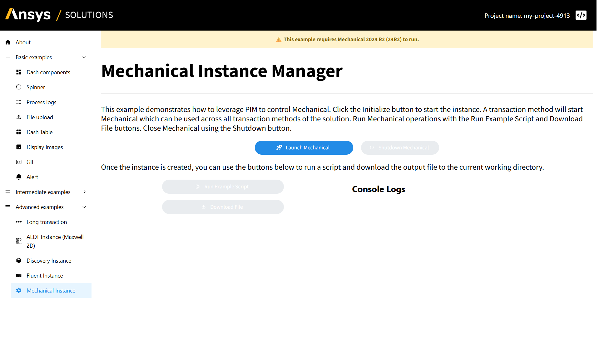
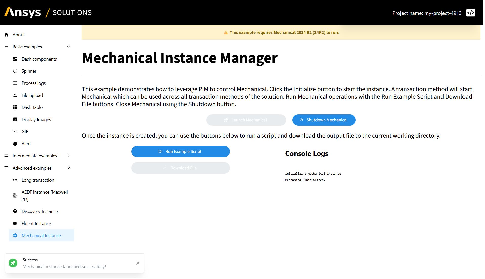
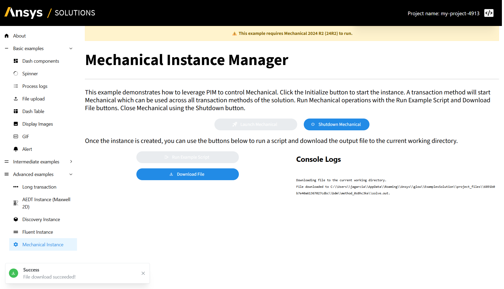
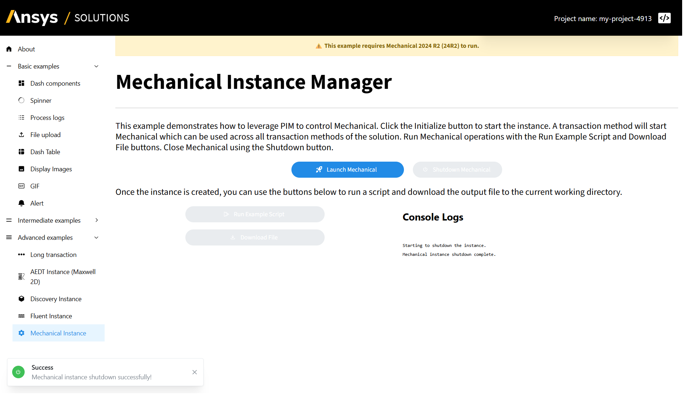

Mechanical Product Instance Manager#
Feature highlight#
Ansys Mechanical is a powerful simulation tool for structural analysis, supporting a wide range of applications including stress analysis, vibration, thermal, and fatigue simulations.
This example shows how to create a product instance manager for Mechanical products using SAF. The product instance manager enables management of the Mechanical product instance lifecycle, including starting, stopping, and accessing the product’s API.
In this example, you learn how to:
Start a product instance from a long-running transaction decorated with
@create_instance.Reuse the running instance in the other transaction methods through the
@instancedecorator.Call the Mechanical API to upload a geometry file and run a custom Python script that solves the model.
Move files between the solution and the product with the
storage_scopeand anEntityHandlefield.Publish progress on named event streams with
transaction.raise_event.Wire one callback per button and use event listeners to refresh the console logs and the notifications.
When you complete this example, you can expect the following output in the solution UI:
{kind=link}

Status before the initialization of the product instance#
{kind=link}

Status after the initialization of the product instance#
{kind=link}

Status after calling the run_script and download_output_solve methods of the product instance#
{kind=link}

Status after shutting down the product instance#
Prerequisites#
Note
This example requires the Mechanical 2025 R2 Service Pack 4 (25R2 SP4) product to be installed on your machine.
To work with a Mechanical product instance, be sure to install the core-pim and instance-management-mechanical extras from the ansys-saf-sdk package. You can do this by manually editing your pyproject.toml.
ansys-saf-sdk = {version = "^0.2.0", extras = ["core-pim", "instance-management-mechanical"]}
This will install the supported version of ansys-mechanical-core to control the Mechanical product instances.
This example uses PIM as the product instance management system. If you want to use HPS instead, replace the core-pim extra with core-hps.
For more information, see Configuration.
Additionally, ensure that the geometry file required for the example script is available. Without this file, the script execution will fail. Place the geometry file in the appropriate directory or provide its path in the run_script callback.
Coding#
To create a product instance manager for Mechanical products and interact with it, work through the following sequence of sections.
Backend#
Create the solution definition.
Key concept — Product instance manager
A product instance manager wraps a running Ansys product session. The
@create_instance decorator starts the product and binds the session to a name, while the
@instance decorator injects that same session into any other transaction method.
Key concept — Instance lifecycle
A product instance outlives the transaction method that created it. It stays available to every transaction method of the solution until a transaction explicitly shuts it down.
Key concept — Event stream
A transaction method reports progress with self.transaction.raise_event. Each event is
published on a named stream, so the frontend can react while the transaction is still
running.
Define the step model
There are two transactions that are used to manage the product instance lifecycle:
launch_mechanicalandclose_mechanical.The first one initializes the product instance, while the second one shuts it down.
The
launch_mechanicallong-running transaction is decorated with@create_instanceto create an instance of the Mechanical product manager, in this case,MechanicalManager.The
close_mechanicaltransaction is decorated with @instance and is used to shut down the existing Mechanical instance.
The other two transactions,
run_scriptanddownload_output_solve, are used to execute a custom script and download the output file to the current working directory, respectively.Both are decorated with
@instanceto indicate they operate on an existing product instance.
mechanical_step.py# 5from pathlib import Path
6from time import sleep
7
8from ansys.bdm.api import NO_ENTITY, EntityHandle
9from ansys.saf.glow.solution import StepModel, StepSpec, create_instance, instance, long_running, transaction
10from ansys.saf.glow.solution.beta.mechanical import MechanicalManager
11
12
13class MechanicalInstanceStep(StepModel):
14 """Step to manage a Mechanical instance."""
15
16 version: str = "252"
17 example_file: EntityHandle = NO_ENTITY
18 output_handle: EntityHandle = NO_ENTITY
19 test_file: EntityHandle = NO_ENTITY
20
21 @transaction(self=StepSpec(download=["version"], upload=["test_file"]))
22 @create_instance("mechanical_instance", MechanicalManager)
23 @long_running
24 def launch_mechanical(self, mechanical_instance: MechanicalManager) -> None:
25 """Launch the Mechanical instance."""
26 self.transaction.raise_event(message="Clear Messages", stream_name="mechanical-output-stream")
27 self.transaction.raise_event(
28 message="Initializing Mechanical instance.", stream_name="mechanical-output-stream"
29 )
30 try:
31 mechanical_instance.initialize(version=self.version)
32 test_file_path = self.storage_scope.get_storage_root() / "test_file.txt"
33 test_file_path.write_text("my_test_file")
34 self.test_file = self.storage_scope.store(test_file_path)
35 except Exception as e:
36 self.transaction.raise_event(
37 message="Mechanical initialization failed", stream_name="mechanical-instance-stream"
38 )
39 self.transaction.raise_event(
40 message=f"Mechanical initialization failed: {e}", stream_name="mechanical-output-stream"
41 )
42 return
43 self.transaction.raise_event(message="Mechanical initialized.", stream_name="mechanical-instance-stream")
44 self.transaction.raise_event(message="Mechanical initialized.", stream_name="mechanical-output-stream")
45
46 @transaction(self=StepSpec(download=["example_file"]))
47 @instance("mechanical_instance")
48 def upload_example_file_to_mechanical(self, mechanical_instance: MechanicalManager) -> None:
49 """Upload the example file to Mechanical instance."""
50 self.transaction.raise_event(message="Uploading file.", stream_name="mechanical-instance-stream")
51 self.transaction.raise_event(message="Uploading file.", stream_name="mechanical-output-stream")
52
53 mechanical = mechanical_instance.instance
54 geometry_path = self.storage_scope.get_cached(self.example_file)
55 mechanical.upload(file_name=geometry_path) # type: ignore
56
57 @transaction(self=StepSpec(download=["example_file"]))
58 @instance("mechanical_instance")
59 def initialize_variable_workflow(self, mechanical_instance: MechanicalManager) -> None:
60 """Initialize the variable workflow in Mechanical instance."""
61 self.transaction.raise_event(message="Clear Messages", stream_name="mechanical-output-stream")
62 self.transaction.raise_event(
63 message="Starting to initialize variables.", stream_name="mechanical-output-stream"
64 )
65
66 mechanical = mechanical_instance.instance
67
68 try:
69 self.transaction.raise_event(
70 message="Initializing variable workflow in Mechanical instance.", stream_name="mechanical-output-stream"
71 )
72 geometry_path = mechanical_instance.storage_scope.get_cached(self.example_file)
73 self.transaction.raise_event(
74 message=f"Geometry path: {geometry_path}", stream_name="mechanical-output-stream"
75 )
76 project_directory = mechanical.project_directory # type: ignore
77 self.transaction.raise_event(
78 message=f"Project directory: {project_directory}", stream_name="mechanical-output-stream"
79 )
80
81 # Build the path relative to project directory.
82 combined_path = str(Path(project_directory) / geometry_path.name) # type: ignore
83 path_in_mechanical = combined_path.replace("\\", "\\\\")
84 mechanical.run_python_script(f"part_file_path='{path_in_mechanical}'")
85 except Exception as e:
86 self.transaction.raise_event(
87 message="Mechanical variables initialized failed.", stream_name="mechanical-instance-stream"
88 )
89 self.transaction.raise_event(
90 message=f"Mechanical variables initialized failed: {e}", stream_name="mechanical-output-stream"
91 )
92 return
93
94 @transaction()
95 @instance("mechanical_instance")
96 @long_running
97 def run_script(self, mechanical_instance: MechanicalManager) -> None:
98 """Run a script in the Mechanical instance."""
99 mechanical = mechanical_instance.instance
100
101 self.transaction.raise_event(
102 message="Running script in Mechanical instance.", stream_name="mechanical-output-stream"
103 )
104
105 try:
106 # Run the script
107 output = mechanical.run_python_script(
108 """
109import json
110
111# Section 1: Read geometry information
112geometry_import_group_11 = Model.GeometryImportGroup
113geometry_import_19 = geometry_import_group_11.AddGeometryImport()
114
115geometry_import_19_format = Ansys.Mechanical.DataModel.Enums.GeometryImportPreference.\
116 Format.Automatic
117geometry_import_19_preferences = Ansys.ACT.Mechanical.Utilities.GeometryImportPreferences()
118geometry_import_19_preferences.ProcessNamedSelections = True
119geometry_import_19_preferences.ProcessCoordinateSystems = True
120
121geometry_import_19.Import(part_file_path, geometry_import_19_format, geometry_import_19_preferences)
122
123Model.AddStaticStructuralAnalysis()
124STAT_STRUC = Model.Analyses[0]
125CS_GRP = Model.CoordinateSystems
126ANALYSIS_SETTINGS = STAT_STRUC.Children[0]
127SOLN= STAT_STRUC.Solution
128
129# Section 2: Set up the unit system.
130
131ExtAPI.Application.ActiveUnitSystem = MechanicalUnitSystem.StandardMKS
132ExtAPI.Application.ActiveAngleUnit = AngleUnitType.Radian
133
134# Section 3: Define named selection and coordinate system.
135
136NS1 = Model.NamedSelections.Children[0]
137NS2 = Model.NamedSelections.Children[1]
138NS3 = Model.NamedSelections.Children[2]
139NS4 = Model.NamedSelections.Children[3]
140GCS = CS_GRP.Children[0]
141LCS1 = CS_GRP.Children[1]
142
143# Section 4: Define remote point.
144
145RMPT_GRP = Model.RemotePoints
146RMPT_1 = RMPT_GRP.AddRemotePoint()
147RMPT_1.Location = NS1
148RMPT_1.XCoordinate=Quantity("7 [m]")
149RMPT_1.YCoordinate=Quantity("0 [m]")
150RMPT_1.ZCoordinate=Quantity("0 [m]")
151
152# Section 5: Define mesh settings.
153
154MSH = Model.Mesh
155MSH.ElementSize =Quantity("0.5 [m]")
156MSH.GenerateMesh()
157
158# Section 6: Define boundary conditions.
159
160# Insert fixed support.
161FIX_SUP = STAT_STRUC.AddFixedSupport()
162FIX_SUP.Location = NS2
163
164# Insert frictionless support.
165FRIC_SUP = STAT_STRUC.AddFrictionlessSupport()
166FRIC_SUP.Location = NS3
167
168# Section 7: Define remote force.
169
170REM_FRC1 = STAT_STRUC.AddRemoteForce()
171REM_FRC1.Location = RMPT_1
172REM_FRC1.DefineBy =LoadDefineBy.Components
173REM_FRC1.XComponent.Output.DiscreteValues = [Quantity("1e10 [N]")]
174
175# Section 8: Define thermal condition.
176
177THERM_COND = STAT_STRUC.AddThermalCondition()
178THERM_COND.Location = NS4
179THERM_COND.Magnitude.Output.DefinitionType=VariableDefinitionType.Formula
180THERM_COND.Magnitude.Output.Formula="50*(20+z)"
181THERM_COND.XYZFunctionCoordinateSystem=LCS1
182THERM_COND.RangeMinimum=Quantity("-20 [m]")
183THERM_COND.RangeMaximum=Quantity("1 [m]")
184
185# Section 9: Insert directional deformation.
186
187DIR_DEF = STAT_STRUC.Solution.AddDirectionalDeformation()
188DIR_DEF.Location = NS1
189DIR_DEF.NormalOrientation =NormalOrientationType.XAxis
190
191# Section 10: Add total deformation and force reaction probe.
192
193TOT_DEF = STAT_STRUC.Solution.AddTotalDeformation()
194
195# Add force reaction.
196FRC_REAC_PROBE = STAT_STRUC.Solution.AddForceReaction()
197FRC_REAC_PROBE.BoundaryConditionSelection = FIX_SUP
198FRC_REAC_PROBE.ResultSelection =ProbeDisplayFilter.XAxis
199
200# Section 11: Solve and get the results.
201
202# Solve static analysis.
203STAT_STRUC.Solution.Solve(True)
204
205dir_deformation_details = {
206"Minimum": str(DIR_DEF.Minimum),
207"Maximum": str(DIR_DEF.Maximum),
208"Average": str(DIR_DEF.Average),
209}
210
211json.dumps(dir_deformation_details)""",
212 )
213 except Exception as e:
214 self.transaction.raise_event(message="Run Script failed.", stream_name="mechanical-instance-stream")
215 self.transaction.raise_event(message=f"Run Script failed: {e}", stream_name="mechanical-output-stream")
216 return
217
218 self.transaction.raise_event(message="Run Script succeeded.", stream_name="mechanical-instance-stream")
219 self.transaction.raise_event(message=f"Run Script succeeded. {output}", stream_name="mechanical-output-stream")
220
221 @transaction(self=StepSpec(upload=["output_handle"]))
222 @instance("mechanical_instance")
223 def download_output_solve(self, mechanical_instance: MechanicalManager) -> None:
224 """Download the output file from Mechanical instance."""
225 mechanical = mechanical_instance.instance
226
227 self.transaction.raise_event(message="Clear Messages", stream_name="mechanical-output-stream")
228 self.transaction.raise_event(
229 message="Downloading file to the current working directory.", stream_name="mechanical-output-stream"
230 )
231
232 try:
233 solve_out_path = ""
234 n = 0
235 nmax = 10
236 while not solve_out_path and n < nmax:
237 for file_path in mechanical.list_files(): # type: ignore
238 if file_path.find("solve.out") != -1: # type: ignore
239 solve_out_path = file_path # type: ignore
240 break
241 n += 1
242 sleep(0.1)
243 if not solve_out_path:
244 raise RuntimeError("solve.out not found.")
245
246 downloaded_files = mechanical.download(
247 solve_out_path, target_dir=self.storage_scope.get_storage_root()
248 ) # type: ignore
249 self.output_handle = self.storage_scope.store(downloaded_files[0]) # type: ignore
250 except Exception as e:
251 self.transaction.raise_event(message="File download failed.", stream_name="mechanical-instance-stream")
252 self.transaction.raise_event(message=f"File download failed: {e}", stream_name="mechanical-output-stream")
253 return
254
255 self.transaction.raise_event(message=f"File download succeeded.", stream_name="mechanical-instance-stream")
256 self.transaction.raise_event(
257 message=f"File downloaded to {downloaded_files[0]}.", stream_name="mechanical-output-stream"
258 )
259
260 @transaction(self=StepSpec())
261 @instance("mechanical_instance")
262 def close_mechanical(self, mechanical_instance: MechanicalManager) -> None:
263 """Close the Mechanical instance."""
264 self.transaction.raise_event(message="Clear Messages", stream_name="mechanical-output-stream")
265 self.transaction.raise_event(
266 message="Starting to shutdown the instance.", stream_name="mechanical-output-stream"
267 )
268
269 try:
270 mechanical_instance.shutdown()
271 except Exception as e:
272 self.transaction.raise_event(
273 message="Mechanical shutdown failed.", stream_name="mechanical-instance-stream"
274 )
275 self.transaction.raise_event(
276 message=f"Mechanical shutdown failed: {e}", stream_name="mechanical-output-stream"
277 )
278 return
279 self.transaction.raise_event(message="Mechanical Shutdown.", stream_name="mechanical-instance-stream")
280 self.transaction.raise_event(
281 message="Mechanical instance shutdown complete.", stream_name="mechanical-output-stream"
282 )
Frontend#
Expose the solution definition in the UI.
Key concept — Callback
A callback is a Dash-decorated function that fires in response to a UI event. In a
SAF solution, callbacks reach the backend through project.steps.<step_name>, read or
write fields, and invoke transaction methods — no manual HTTP calls needed.
Key concept — Event listener
DashClient.create_event_listener subscribes a component to an event stream raised by
the backend. Each message received by the listener triggers a callback, so the console
logs, the button states, and the notifications stay in sync with the running transaction.
Define the step layout
The user interface has four main buttons. Each one triggers a transaction in the step model.
mechanical_instance_page.py# 4from pathlib import Path
5from typing import List, Tuple
6
7from ansys.saf.glow.client import DashClient, callback
8import ansys_web_components_dash as AwcDash
9from ansys_web_components_dash import AwcDashEnum
10from dash_extensions.enrich import Input, Output, State, dcc, html, no_update # pyright: ignore[reportMissingTypeStubs]
11from dash_iconify import DashIconify
12import dash_mantine_components as dmc
13
14from ansys.solutions.examples.solution.definition import ExamplesSolution, MechanicalInstanceStep
15
16
17def layout(step: MechanicalInstanceStep) -> html.Div:
18 """Layout for the Mechanical Instance Manager page."""
19 logs_container = AwcDash.Card(
20 [
21 html.Div(
22 dmc.Title(f"Console Logs", order=3),
23 ),
24 dmc.Space(h=20),
25 html.Div(
26 html.Pre(
27 id="console-logs",
28 style={"whiteSpace": "pre-wrap", "wordBreak": "break-all", "fontSize": "10px"},
29 ),
30 style={
31 "height": "600px",
32 "width": "100%",
33 },
34 ),
35 ],
36 elevation=AwcDashEnum.ElevationSize.SMALL.value,
37 borderRadius=AwcDashEnum.BorderRadius.SMALL.value,
38 awcSizingWidth="100%",
39 padding=AwcDashEnum.Size._2x.value,
40 )
41 layout = html.Div(
42 [
43 html.Div(
44 "⚠️ This example requires Mechanical 2025 R2 Service Pack 4 (25R2 SP4) to run.",
45 style={
46 "backgroundColor": "#fff3cd",
47 "color": "#856404",
48 "padding": "12px",
49 "border": "1px solid #ffeeba",
50 "textAlign": "center",
51 "fontWeight": "bold",
52 "marginBottom": "10px",
53 },
54 ),
55 html.Br(),
56 html.H1(
57 "Mechanical Instance Manager", className="display-3", style={"font-size": "48px", "fontWeight": "bold"}
58 ),
59 html.Br(),
60 html.Hr(className="my-2"),
61 html.Br(),
62 html.P(
63 [
64 "This example demonstrates how to leverage ",
65 html.A(
66 "PIM",
67 href="https://dev-docs.solutions.ansys.com/version/stable/user_guide/"
68 "using_ansys_products/product_instance_management/index.html",
69 target="_blank",
70 style={"color": "blue"},
71 ),
72 " to control Mechanical. Click the Launch Mechanical button to start the instance. A "
73 "transaction method will start Mechanical which can be used across all transaction "
74 "methods of the solution. Run Mechanical operations with the Run Example Script and "
75 "Download File buttons. Close Mechanical using the Shutdown button.",
76 ],
77 style={"font-size": "20px"},
78 ),
79 html.Div(
80 [
81 dmc.Button(
82 "Launch Mechanical",
83 id="launch_mechanical_button",
84 variant="filled",
85 radius="xl",
86 style={"color": "#FFFFFF", "width": "20%"},
87 leftIcon=DashIconify(icon="streamline:startup-solid"),
88 ),
89 dmc.Button(
90 "Shutdown Mechanical",
91 id="shutdown_mechanical_button",
92 variant="filled",
93 radius="xl",
94 style={"color": "#FFFFFF", "width": "200px", "marginLeft": "20px"},
95 leftIcon=DashIconify(icon="mdi:shutdown"),
96 disabled=True,
97 ),
98 ],
99 style={
100 "display": "flex",
101 "justifyContent": "center",
102 "alignItems": "center",
103 "marginTop": "20px",
104 },
105 ),
106 html.Br(),
107 html.P(
108 "Once the instance is created, you can use the buttons below to run a script and download the\
109 output file to the current working directory.",
110 className="lead",
111 style={"font-size": "20px"},
112 ),
113 html.Br(),
114 dmc.Grid(
115 [
116 dmc.Col(
117 dmc.Stack(
118 [
119 dmc.Button(
120 "Run Example Script",
121 id="run_script_button",
122 variant="filled",
123 radius="xl",
124 style={"color": "#FFFFFF", "width": "50%"},
125 leftIcon=DashIconify(icon="codicon:run-all"),
126 disabled=True,
127 ),
128 dmc.Button(
129 "Download File",
130 id="download_file_button",
131 variant="filled",
132 radius="xl",
133 style={"color": "#FFFFFF", "width": "50%"},
134 leftIcon=DashIconify(icon="material-symbols:download"),
135 disabled=True,
136 ),
137 ],
138 align="center",
139 ),
140 span=6,
141 ),
142 dmc.Col(logs_container, span=6),
143 ],
144 grow=True,
145 gutter="xs",
146 ),
147 html.Div(
148 [
149 DashClient.create_event_listener(
150 step, id="mechanical-instance-listener", stream_name="mechanical-instance-stream"
151 )
152 ]
153 ),
154 html.Div(
155 [
156 DashClient.create_event_listener(
157 step, id="mechanical-output-listener", stream_name="mechanical-output-stream"
158 )
159 ]
160 ),
161 dcc.Store(id="mechanical-ui-button-state", storage_type="session"),
162 dmc.NotificationsProvider(
163 dmc.Container(id="mechanical-notification-container", children=[]),
164 position="bottom-left",
165 ),
166 ],
167 )
168
169 return layout
Define the initialization of the product instance callback
When the Initialize Instance button is clicked, the initialization callback is activated.
The callback starts the long-running transaction to initialize the product instance.
After the product is initialized, it updates the UI with the result.
mechanical_instance_page.py#173@callback(
174 Output("launch_mechanical_button", "loading"),
175 Input("launch_mechanical_button", "n_clicks"),
176 State("url", "pathname"),
177 prevent_initial_call=True,
178)
179def init(n_clicks: int, pathname: str):
180 """Initialize the Mechanical instance."""
181 if n_clicks:
182 project = DashClient[ExamplesSolution].get_project(pathname)
183 step = project.steps.mechanical_step
184 step.launch_mechanical()
185 return True
Define the run_script transaction button
The callback starting the transaction runs a custom script in the Mechanical instance.
To run the script, ensure that the example file is available in the project storage.
All the logs generated by the method are printed in the
console-logscontainer.
mechanical_instance_page.py#188def handle_mechanical_step(project, file_path: Path):
189 """Handle all operations related to the Mechanical step.run_script."""
190 step = project.steps.mechanical_step
191 with project.get_storage_scope() as storage_scope, Path(
192 file_path,
193 ).open("rb") as f:
194 step.example_file = storage_scope.store_stream(f.read(), Path("example_01_geometry.agdb"))
195 step.upload_example_file_to_mechanical()
196 step.initialize_variable_workflow()
197 step.run_script()
198
199
200@callback(
201 Output("mechanical-notification-container", "children"),
202 Input("run_script_button", "n_clicks"),
203 State("url", "pathname"),
204 prevent_initial_call=True,
205)
206def run_script(n_clicks: int, pathname: str) -> dmc.Notification | None:
207 """Run a script in the Mechanical instance."""
208 project = DashClient[ExamplesSolution].get_project(pathname)
209 file_path = Path(__file__).parent.parent.parent.parent / "solution/method_assets/example_01_geometry.agdb"
210 if not file_path.exists():
211 return dmc.Notification(
212 id="my-notification",
213 title="File not found",
214 message="Geometry file not found. Please check the file path.",
215 color="red",
216 action="show",
217 icon=DashIconify(icon="codicon:run-all"),
218 )
219
220 if n_clicks:
221 handle_mechanical_step(project, file_path)
222
223 return no_update
Define the download_file transaction button
The callback starting the transaction downloads the output file from the Mechanical instance to the current working directory.
All the logs generated by the method are printed in the
console-logscontainer.
mechanical_instance_page.py#229@callback(
230 Input("download_file_button", "n_clicks"),
231 State("url", "pathname"),
232 prevent_initial_call=True,
233)
234def download_file(n_clicks: int, pathname: str):
235 """Download a file from the Mechanical instance."""
236 if n_clicks:
237 project = DashClient[ExamplesSolution].get_project(pathname)
238 step = project.steps.mechanical_step
239 step.download_output_solve()
240
241
242@callback(
243 Output("download_file_button", "loading", allow_duplicate=True),
244 Input("download_file_button", "n_clicks"),
245 State("url", "pathname"),
246 prevent_initial_call=True,
247)
248def load_mechanical_download(n_clicks: int, pathname: str):
249 """Set loading state for the download file button."""
250 return True
Define the shutdown transaction button
When the Shutdown Instance button is clicked, the shutdown callback is activated.
The callback starts the transaction to shut down the product instance.
mechanical_instance_page.py#253@callback(
254 Input("shutdown_mechanical_button", "n_clicks"),
255 State("url", "pathname"),
256 prevent_initial_call=True,
257)
258def shutdown(n_clicks: int, pathname: str):
259 """Shutdown the Mechanical instance."""
260 if n_clicks is not None:
261 project = DashClient[ExamplesSolution].get_project(pathname)
262 step = project.steps.mechanical_step
263 step.close_mechanical()
264
265
266@callback(
267 Output("shutdown_mechanical_button", "loading", allow_duplicate=True),
268 Input("shutdown_mechanical_button", "n_clicks"),
269 State("url", "pathname"),
270 prevent_initial_call=True,
271)
272def load_mechanical_shutdown(n_clicks: int, pathname: str):
273 """Set loading state for the shutdown button."""
274 return True
Define the logs system.
Create the
logs_containercomponent and an event listener for themechanical-output-listenerstream to display logs in the UI, as shown in the layout.The method logs will be received through the
mechanical-output-listenerlistener.When the listener receives a message, the callback is activated and updates the logs container as expected.
mechanical_instance_page.py#277@callback(
278 Output("console-logs", "children"),
279 Input("mechanical-output-listener", "message"),
280 State("console-logs", "children"),
281 State("url", "pathname"),
282)
283def display_the_mechanical_output(message: dict, current_logs: str, pathname: str) -> str:
284 """Display mechanical output."""
285 if message:
286 new_content = message["data"].strip('"').replace("\\n", "\n")
287 if new_content == "Clear Messages":
288 return ""
289 combined = (current_logs or "") + "\n" + new_content
290 return combined
291 return current_logs
Define the notification system.
Create the
dmc.NotificationsProviderand an event listener for themechanical-instance-listenerstream to display notifications in the UI, as shown in the layout.To display notifications when a method succeeds or fails, the
mechanical-instance-listenermust be triggered.When the listener receives a message, the callback is activated and generates the appropriate notification in the UI.
mechanical_instance_page.py#294@callback(
295 [
296 Output(button_id, "loading")
297 for button_id in [
298 "launch_mechanical_button",
299 "shutdown_mechanical_button",
300 "run_script_button",
301 "download_file_button",
302 ]
303 ],
304 [
305 Output(button_id, "disabled")
306 for button_id in [
307 "launch_mechanical_button",
308 "shutdown_mechanical_button",
309 "run_script_button",
310 "download_file_button",
311 ]
312 ],
313 Output("mechanical-notification-container", "children"),
314 Output("mechanical-ui-button-state", "data"),
315 Input("mechanical-instance-listener", "message"),
316 Input("url", "pathname"),
317 State("mechanical-ui-button-state", "data"),
318)
319def update_mechanical_ui(
320 message: dict, pathname: str, prev_state: dict | None
321) -> Tuple[List[bool], List[bool], dmc.Notification, dict]:
322 """Update the ui."""
323 button_ids = ["launch_mechanical_button", "shutdown_mechanical_button", "run_script_button", "download_file_button"]
324 default_states = {
325 "launch_mechanical_button": {
326 "loading": False,
327 "disabled": False,
328 },
329 "shutdown_mechanical_button": {
330 "loading": False,
331 "disabled": True,
332 },
333 "run_script_button": {
334 "loading": False,
335 "disabled": True,
336 },
337 "download_file_button": {
338 "loading": False,
339 "disabled": True,
340 },
341 }
342 notification = dmc.Notification(
343 id="my-notification",
344 title="Success",
345 message="PlaceHolder",
346 color="green",
347 action="show",
348 icon=None,
349 )
350 if prev_state is None:
351 prev_state = default_states.copy()
352 if message:
353 message_content = message["data"].strip('"').replace("\\n", "\n")
354 if message_content == "Mechanical initialized.":
355 prev_state["launch_mechanical_button"]["disabled"] = True
356 prev_state["shutdown_mechanical_button"]["disabled"] = False
357 prev_state["run_script_button"]["disabled"] = False
358 notification.message = "Mechanical instance launched successfully!"
359 notification.icon = DashIconify(icon="streamline:startup-solid")
360 elif message_content == "Mechanical initialization failed":
361 prev_state["launch_mechanical_button"]["disabled"] = False
362 notification.message = "Mechanical initialization failed. Please check the logs."
363 notification.icon = DashIconify(icon="streamline:startup-solid")
364 notification.color = "red"
365 notification.title = "Error"
366 elif message_content == "Uploading file.":
367 notification.action = "hide"
368 disabled_states = [prev_state[button_id]["disabled"] for button_id in button_ids]
369 return (
370 *[False, False, True, False],
371 *disabled_states,
372 notification if message else no_update,
373 prev_state if prev_state else default_states,
374 )
375 elif message_content == "Run Script succeeded.":
376 prev_state["run_script_button"]["disabled"] = True
377 prev_state["download_file_button"]["disabled"] = False
378 notification.message = "Script run successfully!"
379 notification.icon = DashIconify(icon="codicon:run-all")
380 elif message_content == "Mechanical variables initialized failed." or message_content == "Run Script failed.":
381 prev_state["run_script_button"]["disabled"] = False
382 notification.message = "Script run failed. Please check the logs."
383 notification.icon = DashIconify(icon="codicon:run-all")
384 notification.color = "red"
385 notification.title = "Error"
386 elif message_content == "File download succeeded.":
387 notification.message = "File download succeeded!"
388 notification.icon = DashIconify(icon="material-symbols:download")
389 elif message_content == "File download failed.":
390 notification.message = "File download failed. Please check the logs."
391 notification.icon = DashIconify(icon="materials-symbols:download")
392 notification.color = "red"
393 notification.title = "Error"
394 elif message_content == "Mechanical Shutdown.":
395 prev_state = default_states
396 notification.message = "Mechanical instance shutdown successfully!"
397 notification.icon = DashIconify(icon="mdi:shutdown")
398 elif message_content == "Mechanical shutdown failed.":
399 prev_state["shutdown_mechanical_button"]["disabled"] = False
400 notification.message = "Mechanical instance shutdown failed. Please check the logs."
401 notification.icon = DashIconify(icon="mdi:shutdown")
402 notification.color = "red"
403 notification.title = "Error"
404 disabled_states = [prev_state[button_id]["disabled"] for button_id in button_ids]
405 return (
406 *[False, False, False, False],
407 *disabled_states,
408 notification if message else no_update,
409 prev_state if prev_state else default_states,
410 )
Now that your implementation is complete, continue to the Testing section.
Testing#
Finally, test your implementation to confirm it works as expected.
Run the solution and compare your results with the results shown in the Feature highlight section.